library(sf)
library(readxl)
library(raster)
library(spatstat)
library(economiccomplexity)
directorio = "Datos/Originales/Hidalgo/"
archivos_zip = list.files(path = directorio, recursive = TRUE, full.names = TRUE, pattern = "\\.zip")
for (zip_file in archivos_zip) {
nombre_carpeta = tools::file_path_sans_ext(basename(zip_file))
# Carpeta destino
destino = file.path(dirname(zip_file), nombre_carpeta)
# Crear carpeta si no existe
if (!dir.exists(destino)) {
dir.create(destino, recursive = TRUE)
}
# Extraer dentro de la carpeta
unzip(zip_file, exdir = destino)
}Documentación Tablero de Complejidad Económica
Actualización del Tablero
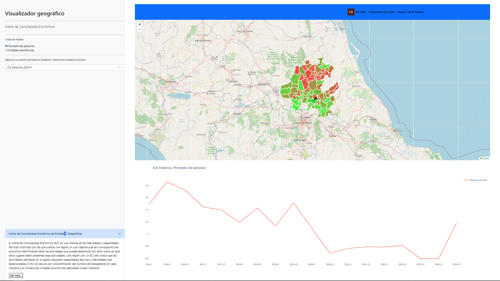
El propósito de este documento es presentar la actualización de los datos correspondientes a los nuevos periodos del Tablero de Complejidad Económica, disponible en SIGEH Hidalgo.
Esta actualización se centra exclusivamente en la obtención e incorporación de los datos que se muestran en las gráficas. No se realizan modificaciones al código de la aplicación, el cual se mantiene desarrollado en Python Dash.
Las ideas y metodologías utilizadas en el tablero se basan principalmente en:
- DATA MÉXICO — Complejidad económica
- OEC — Observatory of Economic Complexity
- The Atlas of Economic Complexity: Mapping Paths to Prosperity (PDF)
- Documentación R: package economiccomplexity (CRAN)
- Mis notas
Obtención de los datos
Los datos se obtendrán a partir de la descarga masiva del Directorio Estadístico Nacional de Unidades Económicas (DENUE).
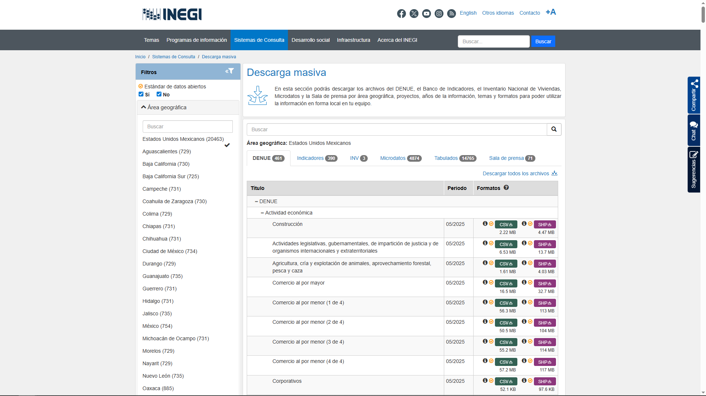
Se realizarán dos descargas:
Hidalgo
Nivel Nacional
Para el caso de Hidalgo, dentro de la página del DENUE utilizaremos los filtros para seleccionar la entidad y descargar el archivo en formato CSV. En este ejercicio trabajaremos con la base correspondiente a mayo 2025.
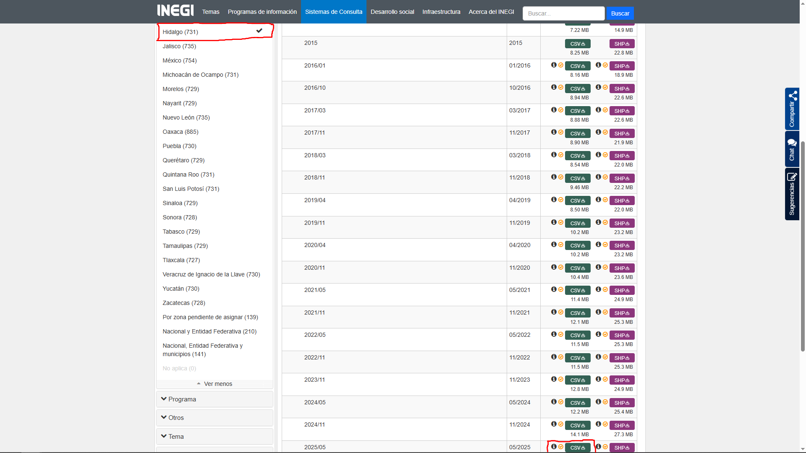
Recomendaciones para organizar la información:
Descargar el archivo.
Guardarlo en una carpeta específica (ejemplo:
Datos → Originales → Hidalgo).Renombrar el archivo según el periodo:
2025A → Primer periodo 2025.
2025B → Segundo periodo 2025.


Por otro lado, cuando es a nivel nacional dentro de la página del DENUE utilizaremos los filtros para seleccionar Estados Unidos Mexicanos y descargar los 25 archivos CSV.
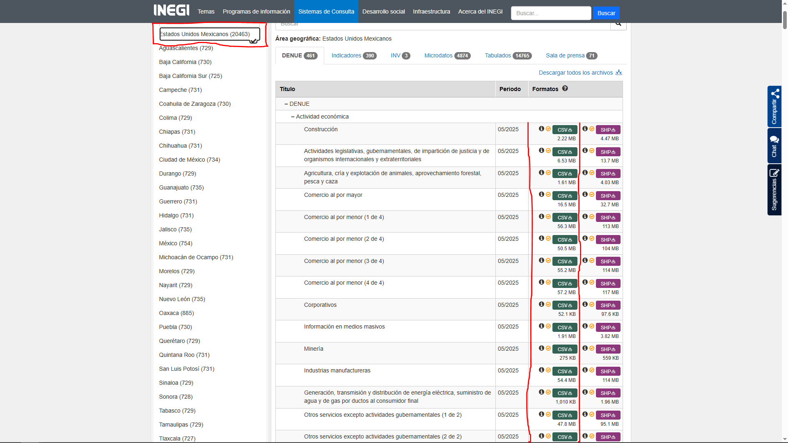
Recomendaciones para organizar la información:
Descargar los archivos.
Guardarlo en una carpeta específica (ejemplo:
Datos → Originales → Nacional).Creamos una carpeta según el periodo:
2025A → Primer periodo 2025.
2025B → Segundo periodo 2025.
Añadimos todos los archivos descargados a esa carpeta.


Descomprimir archivos
Descomprime los archivos de Hidalgo. Solo indica la carpeta donde los guardaste y cambia la línea con esa ruta.
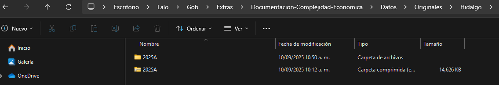
De manera analoga los archivos nivel nacional. Solo indica la carpeta donde los guardaste y cambia la línea con esa ruta.
directorio = "Datos/Originales/Nacional/2025A"
archivos_zip = list.files(path = directorio, recursive = TRUE, full.names = TRUE, pattern = "\\.zip")
for (zip_file in archivos_zip) {
nombre_carpeta = tools::file_path_sans_ext(basename(zip_file))
# Carpeta destino
destino = file.path(dirname(zip_file), nombre_carpeta)
# Crear carpeta si no existe
if (!dir.exists(destino)) {
dir.create(destino, recursive = TRUE)
}
# Extraer dentro de la carpeta
unzip(zip_file, exdir = destino)
}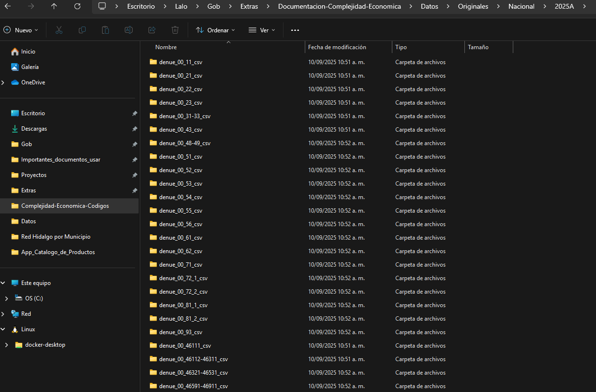
Índice de Complejidad Económica
El Índice de Complejidad Económica (ECI) es una medida de las habilidades y capacidades técnicas implícitas con las que cuenta una región, el cual captura qué tan compleja es una economía identificando tanto las actividades que puede desarrollar con éxito como en qué otros lugares están presentes esas actividades. Una región con un ECI alto indica que las actividades realizadas en la región requieren capacidades técnicas y habilidades más especializadas. El ECI se calculó con una estimación del número de trabajadores en cada industria y el número de unidades económicas dedicadas a cada industria.
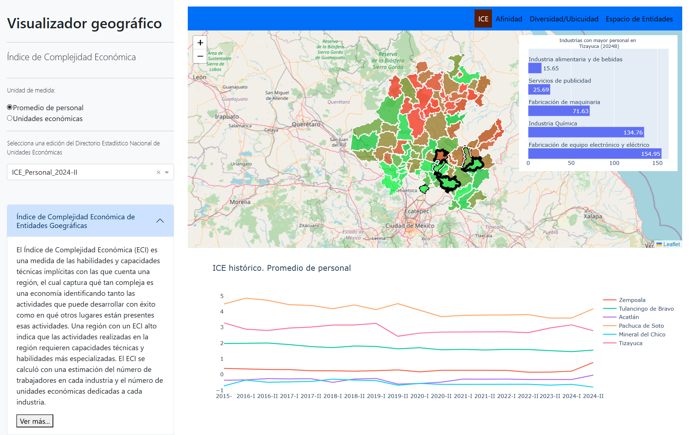
El siguiente código muestra cómo calcular el ECI de dos formas:
Usando la estimación de personal de trabajadores por industria.
Usando el número de unidades económicas.
No se explicará en detalle cómo funciona el código.
directorio = "Datos/Originales/Hidalgo/"
archivos_csv = list.files(path = directorio,
pattern = "\\.csv",
all.files = T,
recursive = T,
full.names = T)
archivos_csv = archivos_csv[!grepl("diccionario", archivos_csv)]
nombres = archivos_csv |> dirname() |> dirname() |> basename()
cat("El archivo csv ha abrir es: ", archivos_csv, "\n")El archivo csv ha abrir es: Datos/Originales/Hidalgo/2025A/conjunto_de_datos/denue_inegi_13_.csv cat("El archivo csv tiene el nombre: ", nombres, "\n")El archivo csv tiene el nombre: 2025A Unicamente verifica que este abriendo el archivo denue_inegi_13_.csv y que el nombre del archivo sea con el correspondiente que renombraste.
i = 1
denue = read.csv(archivos_csv[i]) |>
dplyr::filter(cve_ent == 13)
####################
### ICE Personal ###
####################
denue_P = denue |>
dplyr::mutate(per_ocu = dplyr::case_when(
per_ocu == "0 a 5 personas" ~ "2.5",
per_ocu == "6 a 10 personas" ~ "8",
per_ocu == "11 a 30 personas" ~ "20.5",
per_ocu == "31 a 50 personas" ~ "40.5",
per_ocu == "51 a 100 personas" ~ "75.5",
per_ocu == "101 a 250 personas" ~ "175.5",
per_ocu %in% c("251 y más personas", "251 y m\xe1s personas") ~ "251",
TRUE ~ per_ocu
),
per_ocu = as.numeric(per_ocu),
cvegeo = paste0("13", sprintf("%03d", cve_mun))) |>
dplyr::group_by(cvegeo, codigo_act) |>
dplyr::summarise(suma_per_ocu = sum(per_ocu, na.rm = T))
balassa_P = economiccomplexity::balassa_index(trade_data = denue_P, country = "cvegeo", product = "codigo_act", value = "suma_per_ocu")
complejidad_P = economiccomplexity::complexity_measures(
balassa_index = balassa_P,
method = "eigenvalues"
)
ICE_P = data.frame(
names(complejidad_P$complexity_index_country),
complejidad_P$complexity_index_country
)
names(ICE_P) = c("CVEGEO", paste0("ICE_Personal_", nombres[i]))
####################
### ICE UNIDADES ###
####################
denue_U = denue |>
dplyr::mutate(cvegeo = paste0("13", sprintf("%03d", cve_mun))) |>
dplyr::group_by(cvegeo, codigo_act) |>
dplyr::summarise(suma_unidades = dplyr::n()) |>
dplyr::ungroup()
complejidad_U = economiccomplexity::complexity_measures(
balassa_index = economiccomplexity::balassa_index(trade_data = denue_U, country = "cvegeo", product = "codigo_act", value = "suma_unidades"),
method = "eigenvalues"
)
ICE_U = data.frame(
names(complejidad_U$complexity_index_country),
complejidad_U$complexity_index_country
)
names(ICE_U) = c("CVEGEO", paste0("ICE_Unidades_", nombres[i]))
ICE = merge(x = ICE_P, y = ICE_U, by = "CVEGEO", all.x = T)
ICE |> head() CVEGEO ICE_Personal_2025A ICE_Unidades_2025A
1 13001 -0.2316548 -0.1013980
2 13002 -0.3352427 -0.2047998
3 13003 0.5986708 1.1398258
4 13004 -0.4933637 -0.2825526
5 13005 -0.2479474 -0.2011470
6 13006 -0.1966782 -0.2817761El resultado debe ser un data.frame con 3 columnas:
CVEGEO
ICE_Personal_2025A
ICE_Unidades_2025A
Nota: El nombre de las columnas depende del periodo que descargaste. Por ejemplo:
Si descargaste 2025A se llamarán ICE_Personal_2025A y ICE_Unidades_2025A.
Si fuera 2025B, entonces serían ICE_Personal_2025B y ICE_Unidades_2025B.
Como es una actualización del tablero, necesitas tener antes los Índices de Complejidad Económica previos, que en este caso están en el archivo estatal.csv. El archivo se visualiza asi:
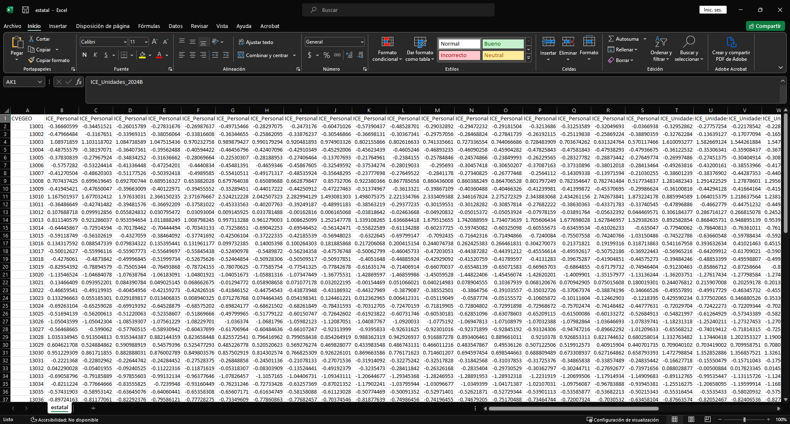
Asi que adjuntaremos lo obtenido previamente ha dicho archivo.
ICE_previo = read.csv("Datos/Procesados/Antiguos/estatal.csv")
personal_previo = names(ICE_previo) |> grep(pattern = "ICE_Personal", value = T)
personal_previo = personal_previo[length(personal_previo)]
unidades_previo = names(ICE_previo) |> grep(pattern = "ICE_Unidades", value = T)
unidades_previo = unidades_previo[length(unidades_previo)]
cat("El ultimo realizado ICE Personal es: ", personal_previo, "\n")El ultimo realizado ICE Personal es: ICE_Personal_2024B cat("El ultimo realizado ICE Unidades es: ", unidades_previo, "\n")El ultimo realizado ICE Unidades es: ICE_Unidades_2024B Nota: Aqui en la linea de codigo donde se encuentran los dplyr::relocate si debes modificar manualmente los nombres de las columnas.
ICE_actualizado = merge(x = ICE_previo, y = ICE, by = "CVEGEO")
ICE_actualizado = ICE_actualizado |>
dplyr::relocate(ICE_Personal_2025A, .after = ICE_Personal_2024B) |>
dplyr::relocate(ICE_Unidades_2025A, .after = ICE_Unidades_2024B)
write.csv(ICE_actualizado, "Datos/Procesados/Actualizados/estatal.csv", row.names = F, fileEncoding = "UTF-8")Afinidad y Complejidad del producto.
La afinidad indica la probabilidad de que un estado comience o deje de desarrollar una determinada actividad, mientras que la complejidad está asociada con mayores niveles de ingresos, crecimiento económico, menor desigualdad de ingresos, etc. De esta manera, el gráfico Afinidad-Complejidad compara el riesgo y el valor estratégico en oportunidades para desarrollar una actividad industrial en un estado. Cada círculo muestra una industria, y su tamaño refleja el número aproximado de empleados.
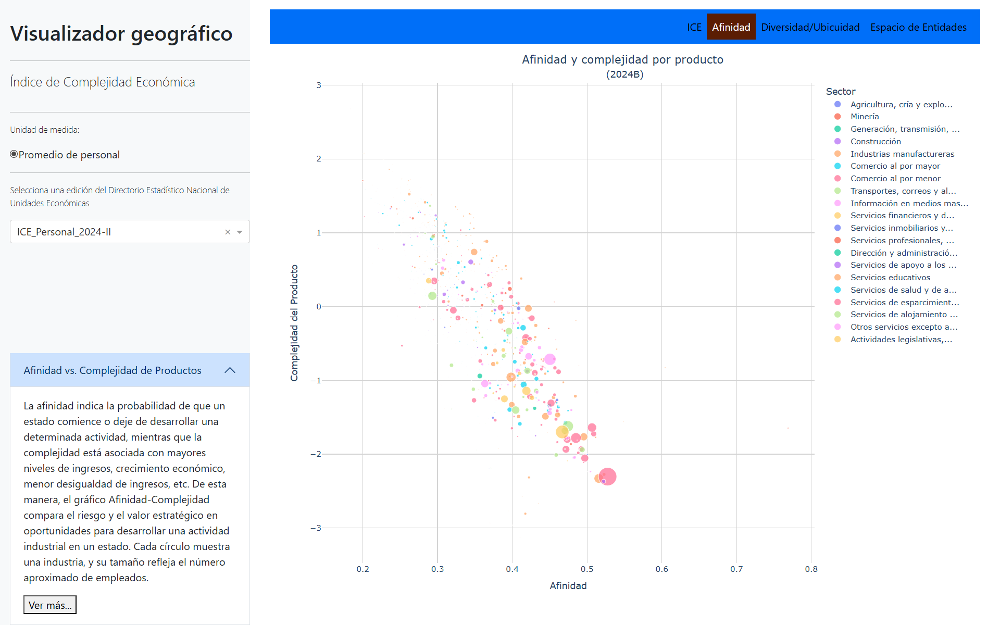
En este caso se usarán todos los datos nacionales. Para ello, es necesario abrir todos los archivos y unirlos para poder hacer uso del calculo de afinidad.
directorio = "Datos/Originales/Nacional/2025A/"
archivos_csv = list.files(path = directorio, pattern = "\\.csv$", all.files = T, full.names = T, recursive = T)
archivos_csv = archivos_csv[!grepl("diccionario", archivos_csv)]
archivos = lapply(archivos_csv, function(x) {
df = read.csv(x)
df = df |>
dplyr::select(cve_ent, cve_mun, cve_loc, codigo_act, per_ocu)
df
})
datos = dplyr::bind_rows(archivos)Con todos los archivos CSV unidos en un solo data.frame llamado datos, se realizará el cálculo de la afinidad, no se explicará en detalle cómo funciona el código.
df = datos
denue = datos
datos = denue |>
dplyr::mutate(per_ocu = dplyr::case_when(
per_ocu == "0 a 5 personas" ~ "2.5",
per_ocu == "6 a 10 personas" ~ "8",
per_ocu == "11 a 30 personas" ~ "20.5",
per_ocu == "31 a 50 personas" ~ "40.5",
per_ocu == "51 a 100 personas" ~ "75.5",
per_ocu == "101 a 250 personas" ~ "175.5",
per_ocu %in% c("251 y más personas", "251 y m\xe1s personas") ~ "251",
TRUE ~ per_ocu
),
per_ocu = as.numeric(per_ocu)
) |>
dplyr::group_by(cve_ent, codigo_act) |>
dplyr::summarise(suma_per_ocu = sum(per_ocu, na.rm = T))
# Calculo de balassa
M = economiccomplexity::balassa_index(trade_data = datos, country = "cve_ent", product = "codigo_act", value = "suma_per_ocu")
# Indice de complejidad producto
complejidad = economiccomplexity::complexity_measures(balassa_index = M, method = "eigenvalues" )
complejidad_producto = data.frame(names(complejidad$complexity_index_product), complejidad$complexity_index_product)
names(complejidad_producto) = c("codigo_act", "complejidad_producto")
# Afinidad
phi = economiccomplexity::proximity(M)
phi_product = as.matrix(phi$proximity_product)
I = diag(length(rowSums(as.matrix(phi_product))))*(1/rowSums(as.matrix(phi_product)))
matriz_afinidad = (as.matrix(M) %*% t(as.matrix(phi_product))) %*% I
colnames(matriz_afinidad) = colnames(phi_product)
afinidad = cbind(colnames(matriz_afinidad), matriz_afinidad[13,]) # Afinidad de hidalgo
colnames(afinidad) = c("codigo_act", "afinidad")
# Personal por producto
personal = datos |> dplyr::filter(cve_ent == 13) |>
dplyr::group_by(codigo_act) |>
dplyr::summarise(personal_ocupado = sum(suma_per_ocu))
preparacion_afinidad = merge(x = complejidad_producto, y = afinidad, by.x = "codigo_act", by.y = "codigo_act" )
preparacion_afinidad = merge(x = preparacion_afinidad, y = personal, by.x = "codigo_act", by.y = "codigo_act" )
nombres = directorio |> basename()
names(preparacion_afinidad)[2:ncol(preparacion_afinidad)] = paste0(names(preparacion_afinidad)[2:ncol(preparacion_afinidad)], "_", nombres)
preparacion_afinidad |> head() codigo_act complejidad_producto_2025A afinidad_2025A
1 112514 -1.5366706 0.301408917255585
2 112515 -2.3578874 0.501285869461191
3 112516 -0.9951343 0.315082100052328
4 112519 -0.4429624 0.296780283782388
5 114119 -1.7003501 0.367901108307076
6 115111 -0.2251258 0.32185348138175
personal_ocupado_2025A
1 2.5
2 604.0
3 2.5
4 10.5
5 482.5
6 2.5El resultado debe ser un data.frame con 4 columnas:
codigo_act
complejidad_producto_2025A
afinidad_2025A
personal_ocupado_2025A
Nota: El nombre de las columnas depende del periodo que descargaste. Por ejemplo:
Si descargaste 2025A se llamarán complejidad_producto_2025A, analogamente las demas columnas.
Si fuera 2025B, entonces serían complejidad_producto_2025B, analogamente las demas columnas.
Como es una actualización del tablero, necesitas tener antes los Afinidad y Complejidad del Productos previos, que en este caso están en el archivo afinidad_6_nombres.csv. El archivo se visualiza asi:
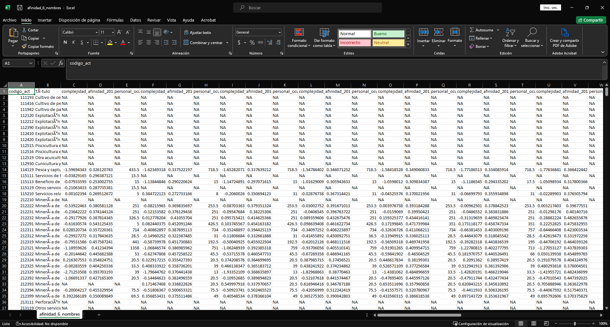
Asi que adjuntaremos lo obtenido previamente ha dicho archivo.
afinidad_previo = read.csv("Datos/Procesados/Antiguos/afinidad_6_nombres.csv")
afinidad_actualizado = merge(x = afinidad_previo, y = preparacion_afinidad, by = "codigo_act", all.x = T, all.y = T)
afinidad_actualizado = afinidad_actualizado |>
dplyr::relocate(complejidad_producto_2025A:personal_ocupado_2025A, .after = personal_ocupado_2024B) |>
dplyr::relocate(afinidad_2025A, .after = complejidad_producto_2025A) |>
dplyr::relocate(personal_ocupado_2025A, .after = afinidad_2025A)
scian = readxl::read_excel("Datos/scian_2023_categorias_y_productos.xlsx")[,c(1,2)]
names(scian) = scian[1,]
scian = scian[-1,]
scian = scian |>
dplyr::filter(!is.na(Código))
scian_seis = scian |>
dplyr::filter(nchar(Código) == 6) |>
dplyr::mutate(Título = sub("T$", "", Título))
scian_dos = scian |>
dplyr::filter(nchar(Código) == 2) |>
dplyr::mutate(Título = sub("T$", "", Título)) |>
dplyr::rename(Título_dos_digitos = Título)
afinidad_actualizado = afinidad_actualizado |>
dplyr::select(-Título,-codigo_act_dos_digitos,-Título_dos_digitos)
afinidad_actualizado = merge(x = afinidad_actualizado, y = scian_seis, by.x = "codigo_act", by.y = "Código", all.x = T)
afinidad_actualizado = afinidad_actualizado |>
dplyr::relocate(Título, .after = codigo_act) |>
dplyr::mutate(codigo_act_dos_digitos = substr(x = codigo_act, start = 1, stop = 2))
afinidad_actualizado = merge(x = afinidad_actualizado, y = scian_dos, by.x = "codigo_act_dos_digitos", by.y = "Código", all.x = T)
afinidad_actualizado = afinidad_actualizado |>
dplyr::relocate(codigo_act_dos_digitos, .before = Título_dos_digitos) |>
dplyr::mutate(Título_dos_digitos = dplyr::case_when(
codigo_act_dos_digitos %in% c(31, 32, 33) ~ "Industrias manufactureras",
codigo_act_dos_digitos %in% c(48, 49) ~ "Transportes, correos y almacenamiento",
TRUE ~ Título_dos_digitos
)) |>
dplyr::arrange(codigo_act)
write.csv(afinidad_actualizado, "Datos/Procesados/Actualizados/afinidad_6_nombres.csv", row.names = F, fileEncoding = "UTF-8")Diversidad y Ubicuidad promedio.
Diversidad indica el número de actividades económicas en las que está especializada cada entidad.
Ubicuidad indica cuántas entidades están especializadas en cada actividad económica.
Las entidades peor posicionadas están en el primer cuadrante (superior derecha), donde muestran baja diversidad y alta ubicuidad. En contraste, las entidades que se posicionan mejor se encuentran en el cuarto cuadrante (inferior derecha), caracterizado por alta diversificación y baja ubicuidad.
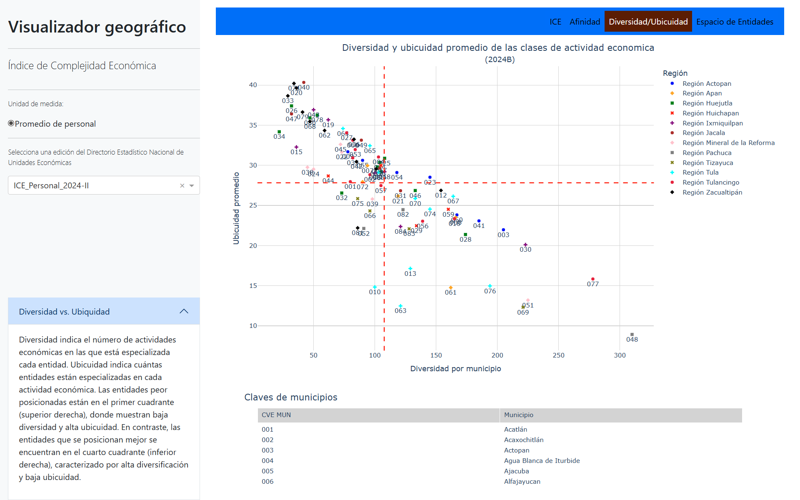
No se explicará en detalle cómo funciona el código.
directorio = "Datos/Originales/Hidalgo/"
archivos_csv = list.files(path = directorio,
pattern = "\\.csv",
all.files = T,
recursive = T,
full.names = T)
archivos_csv = archivos_csv[!grepl("diccionario", archivos_csv)]
nombres = archivos_csv |> dirname() |> dirname() |> basename()
cat("El archivo csv ha abrir es: ", archivos_csv, "\n")El archivo csv ha abrir es: Datos/Originales/Hidalgo/2025A/conjunto_de_datos/denue_inegi_13_.csv cat("El archivo csv tiene el nombre: ", nombres, "\n")El archivo csv tiene el nombre: 2025A Unicamente verifica que este abriendo el archivo denue_inegi_13_.csv y que el nombre del archivo sea con el correspondiente que renombraste.
i = 1
denue = read.csv(archivos_csv[i]) |>
dplyr::filter(cve_ent == 13)
####################
### ICE Personal ###
####################
denue_P = denue |>
dplyr::mutate(per_ocu = dplyr::case_when(
per_ocu == "0 a 5 personas" ~ "2.5",
per_ocu == "6 a 10 personas" ~ "8",
per_ocu == "11 a 30 personas" ~ "20.5",
per_ocu == "31 a 50 personas" ~ "40.5",
per_ocu == "51 a 100 personas" ~ "75.5",
per_ocu == "101 a 250 personas" ~ "175.5",
per_ocu %in% c("251 y más personas", "251 y m\xe1s personas") ~ "251",
TRUE ~ per_ocu
),
per_ocu = as.numeric(per_ocu),
cvegeo = paste0("13", sprintf("%03d", cve_mun))) |>
dplyr::group_by(cvegeo, codigo_act) |>
dplyr::summarise(suma_per_ocu = sum(per_ocu, na.rm = T))
balassa_P = economiccomplexity::balassa_index(trade_data = denue_P, country = "cvegeo", product = "codigo_act", value = "suma_per_ocu")
complejidad_P = economiccomplexity::complexity_measures(
balassa_index = balassa_P,
method = "eigenvalues"
)
ICE_P = data.frame(
names(complejidad_P$complexity_index_country),
complejidad_P$complexity_index_country
)
names(ICE_P) = c("CVEGEO", paste0("ICE_Personal_", nombres[i]))
M = balassa_P |> as.matrix()
diversidad = rowSums(M)
ubicuidad = colSums(M)
especializado = (1/diversidad)*(M%*%ubicuidad)
datos_grafica = cbind(c(1:nrow(M)), diversidad, especializado)
colnames(datos_grafica) = c("CVE_MUN", paste0("diversidad_", nombres[i]) , paste0("especializado_", nombres[i]))
datos_grafica = datos_grafica |> as.data.frame()
datos_grafica |> head() CVE_MUN diversidad_2025A especializado_2025A
13001 1 68 30.11765
13002 2 94 29.53191
13003 3 194 21.55670
13004 4 92 30.93478
13005 5 106 29.08491
13006 6 100 28.92000El resultado debe ser un data.frame con 3 columnas:
CVE_MUN
diversidad_2025A
especializado_2025A
Nota: El nombre de las columnas depende del periodo que descargaste. Por ejemplo:
Si descargaste 2025A se llamarán diversidad_2025A y especializado_2025A.
Si fuera 2025B, entonces serían diversidad_2025B y especializado_2025B.
Como es una actualización del tablero, necesitas tener antes los Índices de Complejidad Económica previos, que en este caso están en el archivo dive_vs_ubi_6_mun.csv. El archivo se visualiza asi:
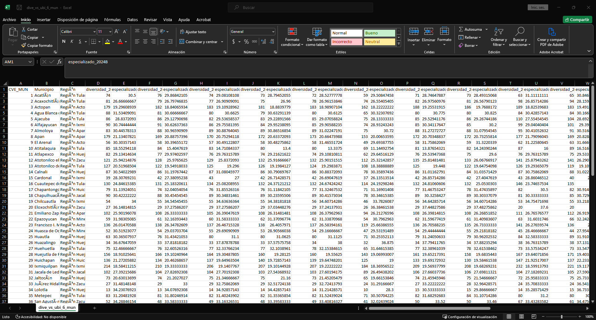
Asi que adjuntaremos lo obtenido previamente ha dicho archivo.
diversidad_ubicuidad_previo = read.csv("Datos/Procesados/Antiguos/dive_vs_ubi_6_mun.csv")
diversidad_ubicuidad_actualizado = merge(x = diversidad_ubicuidad_previo, y = datos_grafica, by = "CVE_MUN")
write.csv(diversidad_ubicuidad_actualizado, "Datos/Procesados/Actualizados/dive_vs_ubi_6_mun.csv", row.names = F, fileEncoding = "UTF-8")Red Hidalgo
Es una red en la que cada nodo corresponde a un municipio y los nodos se conectan si existen productos similares, lo que sugiere que comparten habilidades, conocimientos y tecnología parecidas. Los colores de los nodos representan la región a la que pertenecen y su tamaño refleja el número aproximado de empleados.
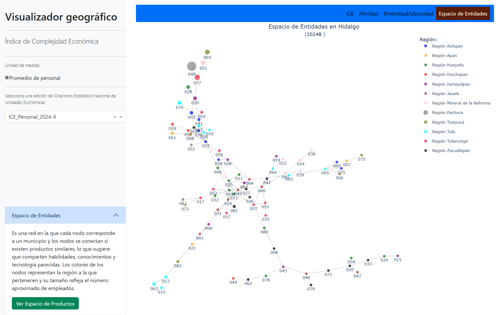
En este apartado se crea un archivo nuevo, el cual debe tener la siguiente estructura:
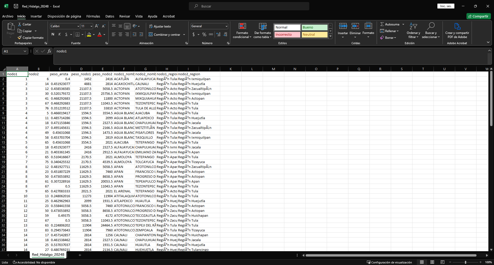
Estos archivos suelen tener por nombre Red_Hidalgo_2024B. No se explicará en detalle cómo funciona el código.
directorio = "Datos/Originales/Hidalgo/"
archivos_csv = list.files(path = directorio,
pattern = "\\.csv",
all.files = T,
recursive = T,
full.names = T)
archivos_csv = archivos_csv[!grepl("diccionario", archivos_csv)]
nombres = archivos_csv |> dirname() |> dirname() |> basename()
cat("El archivo csv ha abrir es: ", archivos_csv, "\n")El archivo csv ha abrir es: Datos/Originales/Hidalgo/2025A/conjunto_de_datos/denue_inegi_13_.csv cat("El archivo csv tiene el nombre: ", nombres, "\n")El archivo csv tiene el nombre: 2025A Unicamente verifica que este abriendo el archivo denue_inegi_13_.csv y que el nombre del archivo sea con el correspondiente que renombraste.
i = 1
denue = read.csv(archivos_csv[i]) |>
dplyr::filter(cve_ent == 13)
####################
### ICE Personal ###
####################
denue_P = denue |>
dplyr::mutate(per_ocu = dplyr::case_when(
per_ocu == "0 a 5 personas" ~ "2.5",
per_ocu == "6 a 10 personas" ~ "8",
per_ocu == "11 a 30 personas" ~ "20.5",
per_ocu == "31 a 50 personas" ~ "40.5",
per_ocu == "51 a 100 personas" ~ "75.5",
per_ocu == "101 a 250 personas" ~ "175.5",
per_ocu %in% c("251 y más personas", "251 y m\xe1s personas") ~ "251",
TRUE ~ per_ocu
),
per_ocu = as.numeric(per_ocu),
cvegeo = paste0("13", sprintf("%03d", cve_mun))) |>
dplyr::group_by(cvegeo, codigo_act) |>
dplyr::summarise(suma_per_ocu = sum(per_ocu, na.rm = T))
balassa_matriz = economiccomplexity::balassa_index(trade_data = denue_P, country = "cvegeo", product = "codigo_act", value = "suma_per_ocu")
pro = economiccomplexity::proximity(balassa_matriz)
net = economiccomplexity::projections(pro$proximity_country, pro$proximity_product)
pesos_grafo = denue_P |> dplyr::group_by(cvegeo) |>
dplyr::summarise(peso_nodo1 = sum(suma_per_ocu, na.rm = TRUE))
pais = net$network_country
peso_aristas = igraph::edge_attr(pais, "weight")
conexiones = igraph::as_edgelist(pais)
interes = as.data.frame(cbind(conexiones,peso_aristas ))
colnames(interes) = c("nodo1", "nodo2", "peso_arista")
p = merge(x = interes, y = pesos_grafo, by.x = "nodo1", by.y = "cvegeo")
colnames(pesos_grafo)[2] = "peso_nodo2"
p = merge(x = p, y = pesos_grafo, by.x = "nodo2", by.y = "cvegeo")
p = p[, c(2,1,3:5)]
p = p |>
dplyr::mutate(nodo1 = as.numeric(nodo1), nodo2 = as.numeric(nodo2)) |>
dplyr::arrange(nodo1,nodo2)
datos = p
datos = datos |>
dplyr::mutate(nodo1 = as.character(nodo1),
nodo2 = as.character(nodo2),
nodo1 = substr(x = nodo1, start = 3, stop = nchar(nodo1)),
nodo2 = substr(x = nodo2, start = 3, stop = nchar(nodo2)),
nodo1 = as.numeric(nodo1),
nodo2 = as.numeric(nodo2),
)
nombres_mun = readxl::read_excel("Datos/Banco de datos infografias _Eduardo.xlsx")
nombres_mun = nombres_mun |>
dplyr::filter(!is.na(Región))
nombres_mun = nombres_mun |>
dplyr::mutate(CVE_MUN = 1:nrow(nombres_mun)) |>
dplyr::select(CVE_MUN, Municipio, Región)
datos = merge(x = datos, y = nombres_mun, by.x = "nodo1", by.y = "CVE_MUN", all.x = T)
datos = datos |>
dplyr::rename(nodo1_nombre = Municipio,
nodo1_region = Región)
datos = merge(x = datos, y = nombres_mun, by.x = "nodo2", by.y = "CVE_MUN", all.x = T)
datos = datos |>
dplyr::rename(nodo2_nombre = Municipio,
nodo2_region = Región) |>
dplyr::relocate(nodo2_nombre, .after = nodo1_nombre) |>
dplyr::relocate(nodo2_region, .after = nodo1_region) |>
dplyr::relocate(nodo2, .after = nodo1) |>
dplyr::arrange(nodo1, nodo2)
write.csv(datos, paste0("Datos/Procesados/Actualizados/", "Red_Hidalgo_", nombres[i],".csv"), row.names = F, fileEncoding = "UTF-8")Espacio Producto
El espacio de producto es una red en la que cada nodo corresponde a un producto, y los nodos se conectan si existe una alta probabilidad de ser coproducidos. Esto implica que los productos conectados comparten requisitos similares en términos de capacidades productivas, conocimientos y tecnologías. Puede ser utilizado para predecir actividades futuras y el crecimiento económico de un país. Los colores de los nodos representan un sector industrial y su tamaño refleja el número aproximado de empleados.
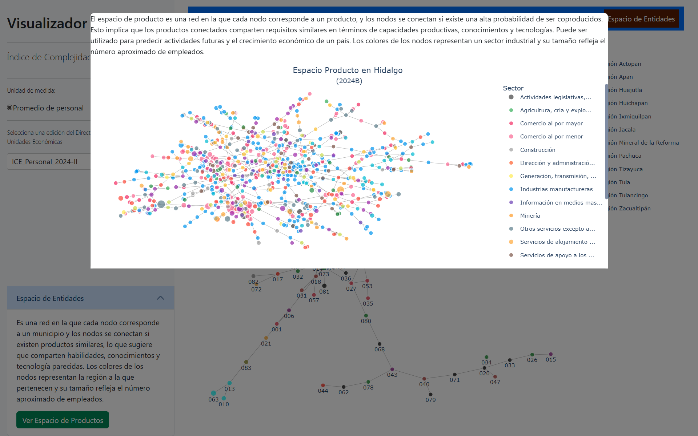
En este apartado se crea un archivo nuevo, el cual debe tener la siguiente estructura:
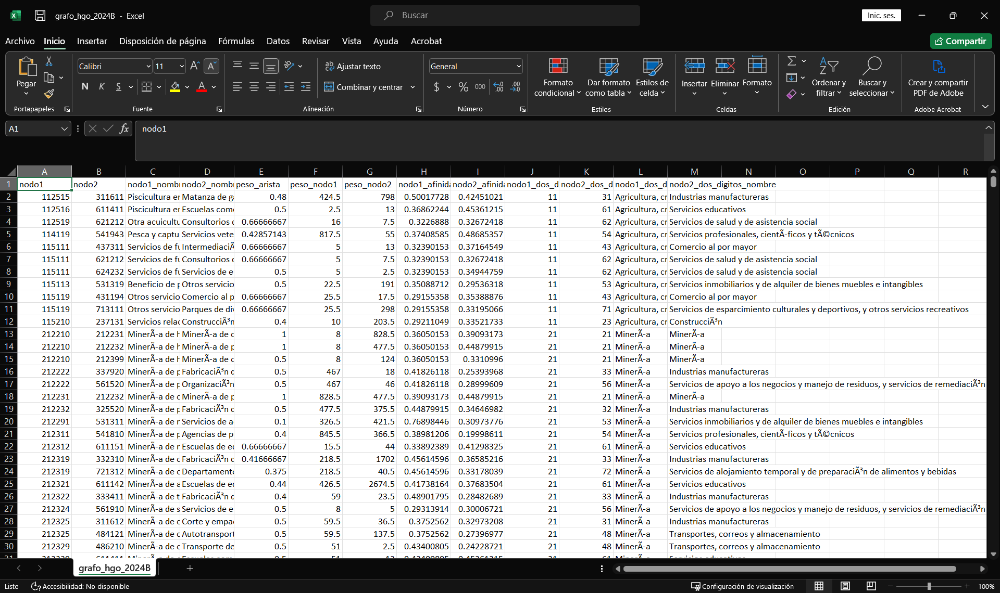
Estos archivos suelen tener por nombre grafo_hgo_2024B. No se explicará en detalle cómo funciona el código.
directorio = "Datos/Originales/Hidalgo/"
archivos_csv = list.files(path = directorio,
pattern = "\\.csv",
all.files = T,
recursive = T,
full.names = T)
archivos_csv = archivos_csv[!grepl("diccionario", archivos_csv)]
nombres = archivos_csv |> dirname() |> dirname() |> basename()
cat("El archivo csv ha abrir es: ", archivos_csv, "\n")El archivo csv ha abrir es: Datos/Originales/Hidalgo/2025A/conjunto_de_datos/denue_inegi_13_.csv cat("El archivo csv tiene el nombre: ", nombres, "\n")El archivo csv tiene el nombre: 2025A Unicamente verifica que este abriendo el archivo denue_inegi_13_.csv y que el nombre del archivo sea con el correspondiente que renombraste.
i = 1
denue = read.csv(archivos_csv[i]) |>
dplyr::filter(cve_ent == 13)
####################
### ICE Personal ###
####################
denue_P = denue |>
dplyr::mutate(per_ocu = dplyr::case_when(
per_ocu == "0 a 5 personas" ~ "2.5",
per_ocu == "6 a 10 personas" ~ "8",
per_ocu == "11 a 30 personas" ~ "20.5",
per_ocu == "31 a 50 personas" ~ "40.5",
per_ocu == "51 a 100 personas" ~ "75.5",
per_ocu == "101 a 250 personas" ~ "175.5",
per_ocu %in% c("251 y más personas", "251 y m\xe1s personas") ~ "251",
TRUE ~ per_ocu
),
per_ocu = as.numeric(per_ocu),
cvegeo = paste0("13", sprintf("%03d", cve_mun))) |>
dplyr::group_by(cvegeo, codigo_act) |>
dplyr::summarise(suma_per_ocu = sum(per_ocu, na.rm = T))
balassa_matriz = economiccomplexity::balassa_index(trade_data = denue_P, country = "cvegeo", product = "codigo_act", value = "suma_per_ocu")
pro = economiccomplexity::proximity(balassa_matriz)
net = economiccomplexity::projections(pro$proximity_country, pro$proximity_product)
pesos_grafo = denue_P |> dplyr::group_by(codigo_act) |>
dplyr::summarise(peso_nodo1 = sum(suma_per_ocu, na.rm = TRUE))
pais = net$network_product
peso_aristas = igraph::edge_attr(pais, "weight")
conexiones = igraph::as_edgelist(pais)
interes = as.data.frame(cbind(conexiones,peso_aristas ))
colnames(interes) = c("nodo1", "nodo2", "peso_arista")
p = merge(x = interes, y = pesos_grafo, by.x = "nodo1", by.y = "codigo_act")
colnames(pesos_grafo)[2] = "peso_nodo2"
p = merge(x = p, y = pesos_grafo, by.x = "nodo2", by.y = "codigo_act")
p = p[, c(2,1,3:5)]
p = p |>
dplyr::mutate(nodo1 = as.numeric(nodo1), nodo2 = as.numeric(nodo2)) |>
dplyr::arrange(nodo1,nodo2)
p |> head() nodo1 nodo2 peso_arista peso_nodo1 peso_nodo2
1 112514 336310 0.5 2.5 101.0
2 112515 321910 0.48780487804878 604.0 2120.5
3 112516 611411 0.5 2.5 13.0
4 112519 115111 0.5 10.5 2.5
5 112519 621212 0.666666666666667 10.5 7.5
6 114119 611631 0.384615384615385 482.5 505.0El resultado debe ser un data.frame con 5 columnas:
nodo1
nodo2
peso_arista
peso_nodo1
peso_nodo2
Para el siguiente paso, necesitamos el archivo afinidad_6_nombres.csv, generado en el apartado de Afinidad y Complejidad del producto, para agregarle las demás columnas.
afinidad = read.csv("Datos/Procesados/Actualizados/afinidad_6_nombres.csv")
afinidad = afinidad |>
dplyr::select(codigo_act, Título, afinidad_2025A, codigo_act_dos_digitos, Título_dos_digitos) |>
dplyr::filter(! is.na(afinidad_2025A))
producto = merge(x = p, y = afinidad, by.x = "nodo1", by.y = "codigo_act", all.x = T)
producto = producto |>
dplyr::rename(nodo1_nombre = Título,
nodo1_afinidad = afinidad_2025A,
nodo1_dos_digitos = codigo_act_dos_digitos,
nodo1_dos_digitos_nombre = Título_dos_digitos)
producto = merge(x = producto, y = afinidad, by.x = "nodo2", by.y = "codigo_act", all.x = T)
producto = producto |>
dplyr::rename(nodo2_nombre = Título,
nodo2_afinidad = afinidad_2025A,
nodo2_dos_digitos = codigo_act_dos_digitos,
nodo2_dos_digitos_nombre = Título_dos_digitos) |>
dplyr::select(nodo1, nodo2, nodo1_nombre, nodo2_nombre,
peso_arista, peso_nodo1, peso_nodo2,
nodo1_afinidad, nodo2_afinidad,
nodo1_dos_digitos, nodo2_dos_digitos, nodo1_dos_digitos_nombre, nodo2_dos_digitos_nombre) |>
dplyr::arrange(nodo1, nodo2)
write.csv(producto, paste0("Datos/Procesados/Actualizados/", "grafo_hgo_", nombres[i],".csv"), row.names = F, fileEncoding = "UTF-8")Balassa Modificado
Para este apartado se necesita el archivo Clasificación ramas de DENUE.xlsx.
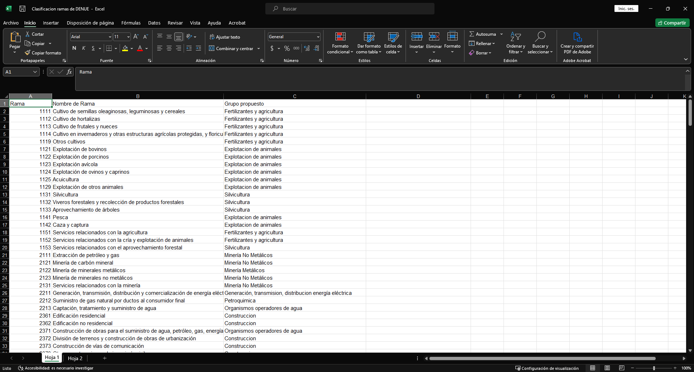
No se dará una explicación detallada del código.
directorio = "Datos/Originales/Hidalgo/"
archivos_csv = list.files(path = directorio,
pattern = "\\.csv",
all.files = T,
recursive = T,
full.names = T)
archivos_csv = archivos_csv[!grepl("diccionario", archivos_csv)]
nombres = archivos_csv |> dirname() |> dirname() |> basename()
cat("El archivo csv ha abrir es: ", archivos_csv, "\n")El archivo csv ha abrir es: Datos/Originales/Hidalgo/2025A/conjunto_de_datos/denue_inegi_13_.csv cat("El archivo csv tiene el nombre: ", nombres, "\n")El archivo csv tiene el nombre: 2025A Unicamente verifica que este abriendo el archivo denue_inegi_13_.csv y que el nombre del archivo sea con el correspondiente que renombraste.
i = 1
denue = read.csv(archivos_csv[i]) |>
dplyr::filter(cve_ent == 13)
####################
### ICE Personal ###
####################
denue = denue |>
dplyr::mutate(rama = substr(x = codigo_act, start = 1, stop = 4)) |>
dplyr::mutate(per_ocu = dplyr::case_when(
per_ocu == "0 a 5 personas" ~ "2.5",
per_ocu == "6 a 10 personas" ~ "8",
per_ocu == "11 a 30 personas" ~ "20.5",
per_ocu == "31 a 50 personas" ~ "40.5",
per_ocu == "51 a 100 personas" ~ "75.5",
per_ocu == "101 a 250 personas" ~ "175.5",
per_ocu %in% c("251 y más personas", "251 y m\xe1s personas") ~ "251",
TRUE ~ per_ocu
),
per_ocu = as.numeric(per_ocu)
)
classificador_hoja = readxl::read_excel("Datos/Clasificacion ramas de DENUE.xlsx")
classificador_hoja = classificador_hoja |>
dplyr::rename(grupo = `Grupo propuesto`) |>
dplyr::mutate(grupo = gsub(pattern = "[0-9]+", replacement = "", x = grupo),
grupo = stringr::str_squish(grupo))
denue = merge(x = denue, y = classificador_hoja |>dplyr::select(Rama,grupo), by.x = 'rama', by.y = 'Rama', all.x = T)
denue_por_mun = denue|>
dplyr::group_by(cve_mun,grupo)|>
dplyr::summarise(personal = sum(per_ocu))
bi = economiccomplexity::balassa_index(trade_data = denue_por_mun, discrete = F, country = "cve_mun", product = "grupo", value = "personal")
pre_biM0 = denue_por_mun |>
tidyr::pivot_wider(names_from = grupo,values_from = personal)
pre_biM = denue_por_mun |>
tidyr::pivot_wider(names_from = grupo,values_from = personal)|>
dplyr::ungroup()|>
dplyr::select(-cve_mun)
bi_raw=pre_biM|>as.matrix()
bi_raw=sum(bi_raw,na.rm = T)*t(t(bi_raw/rowSums(bi_raw,na.rm=T))/colSums(bi_raw,na.rm=T))
bi_raw_mod=t(t(bi_raw**2/rowSums(bi_raw,na.rm=T))/colSums(bi_raw,na.rm=T))*1e4
bi_mod=bi_raw_mod|>as.data.frame()
bi_mod$cve_mun=pre_biM0$cve_mun
bi_mod=bi_mod[,c(ncol(bi_mod),1:(ncol(bi_mod) - 1))]
municipios = readxl::read_excel("Datos/Banco de datos infografias _Eduardo.xlsx")
municipios = municipios |>
dplyr::filter(!is.na(Región))
municipios = municipios |>
dplyr::select(Municipio) |>
dplyr::mutate(CVE_MUN = 1:nrow(municipios))
bi_mod2 = merge(x = bi_mod, y = municipios, by.x = 'cve_mun', by.y='CVE_MUN')
bi_mod2 = bi_mod2 |> dplyr::mutate(cve_mun=sprintf("%03d",cve_mun))
bi_mod2 = bi_mod2[,c(1,ncol(bi_mod2),2:(ncol(bi_mod2) - 1))]
bi_mod2 = bi_mod2 |>
dplyr::rename(NOM_MUN = Municipio)
write.csv(bi_mod2, file.path("Datos/Procesados/Actualizados/", paste0("Balassa_Mod_Nivel_Municipio_por_Grupos_", nombres[i], ".csv")), fileEncoding = "UTF-8", row.names = F)Actualización de Actividades_ComplejidadGIF
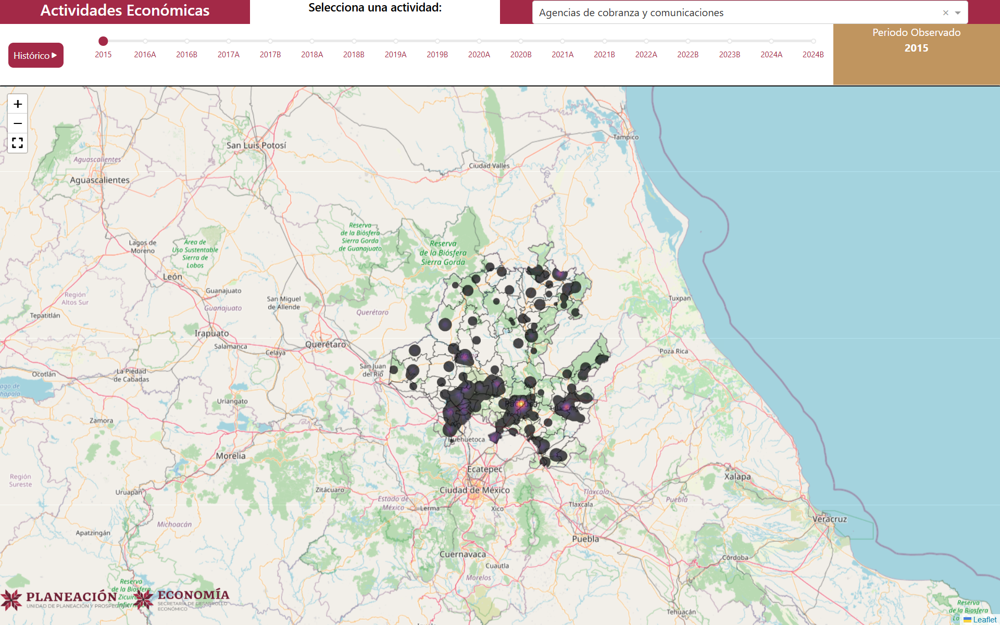
Sin explicación.
Creación de Rasters
directorio = "Datos/Originales/Hidalgo/"
archivos_csv = list.files(path = directorio,
pattern = "\\.csv",
all.files = T,
recursive = T,
full.names = T)
archivos_csv = archivos_csv[!grepl("diccionario", archivos_csv)]
nombres = archivos_csv |> dirname() |> dirname() |> basename()
cat("El archivo csv ha abrir es: ", archivos_csv, "\n")El archivo csv ha abrir es: Datos/Originales/Hidalgo/2025A/conjunto_de_datos/denue_inegi_13_.csv cat("El archivo csv tiene el nombre: ", nombres, "\n")El archivo csv tiene el nombre: 2025A i = 1
denue = read.csv(archivos_csv[i]) |>
dplyr::filter(cve_ent == 13) |>
dplyr::filter(latitud != 0, longitud != 0) |>
dplyr::select(codigo_act,nombre_act,per_ocu,cve_mun,cve_loc,latitud,longitud) |>
dplyr::mutate(rama = substr(x = codigo_act, start = 1, stop = 4)) |>
dplyr::mutate(per_ocu = dplyr::case_when(
per_ocu == "0 a 5 personas" ~ "2.5",
per_ocu == "6 a 10 personas" ~ "8",
per_ocu == "11 a 30 personas" ~ "20.5",
per_ocu == "31 a 50 personas" ~ "40.5",
per_ocu == "51 a 100 personas" ~ "75.5",
per_ocu == "101 a 250 personas" ~ "175.5",
per_ocu %in% c("251 y más personas", "251 y m\xe1s personas") ~ "251",
TRUE ~ per_ocu
),
per_ocu = as.numeric(per_ocu)
)
classificador_hoja = readxl::read_excel("Datos/Clasificacion ramas de DENUE.xlsx")
classificador_hoja = classificador_hoja |>
dplyr::rename(grupo = `Grupo propuesto`) |>
dplyr::mutate(grupo = gsub(pattern = "[0-9]+", replacement = "", x = grupo),
grupo = stringr::str_squish(grupo))
denue_prueba_shp = merge(x = denue, y = classificador_hoja, by.x = 'rama', by.y = 'Rama', all.x = T )
shapefile = sf::st_as_sf(denue_prueba_shp, coords = c("longitud", "latitud"), crs = 4326)
base = raster::raster("Datos/Procesados/Antiguos/Raster/pendiente.tif")*0
bbox = sf::st_bbox(base)
window = spatstat.geom::owin(xrange = c(bbox[1], bbox[3]), yrange = c(bbox[2], bbox[4]))
grupos = unique(denue_prueba_shp$grupo)
### Creacion de carpeta
destino_guardado = file.path("Datos/Procesados/Actualizados", nombres[i])
if (!dir.exists(destino_guardado)) {
dir.create(destino_guardado, recursive = TRUE)
}
for(grupo_I in grupos){
shapefile_grupo = shapefile |> dplyr::filter(grupo == grupo_I)
coords = sf::st_coordinates(shapefile_grupo|> sf::st_transform(raster::crs(base))) # Extraer las coordenadas de los puntos
puntos_ppp = spatstat.geom::ppp(x = coords[spatstat.geom::inside.owin(x = coords[, 1], y = coords[, 2], window), 1],
y = coords[spatstat.geom::inside.owin(x = coords[, 1], y = coords[, 2], window), 2], window = window) ## Convertir los puntos a un objeto ppp
pesos = shapefile_grupo$per_ocu_media[spatstat.geom::inside.owin(x = coords[, 1], y = coords[, 2], window)]
dens = spatstat.explore::density.ppp(puntos_ppp,sigma=c(2000,2000),dimyx=c(998,978),weights =1e6*100*unlist(pesos, use.names = F)/sum(unlist(pesos, use.names = F))) |> raster::raster()
raster::crs(dens) = raster::crs(base)
raster::extent(dens) = raster::extent(base)
dens = dens*(base+1)
dens = ((dens - raster::minValue(x = dens))/(raster::maxValue(dens) - raster::minValue(x = dens)))*0.4
writeRaster(dens,file.path(destino_guardado, paste0(grupo_I,".tiff")), overwrite = T)
}